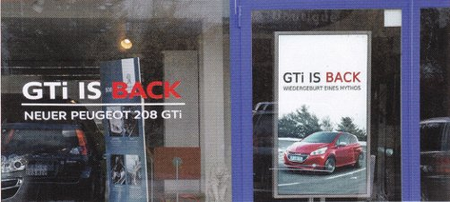
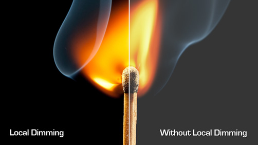

ＤＳ2は Dynascan 社より発売された新しいデジタルサイネージ ソリューションです。
弊社は10年以上にわたり独自の３６０°ＬＥＤビデオディスプレーを広告業界に提供して参りましたが、この度、ＬＣＤディスプレーを加えてデジタルサイネージの強化を図りました。超高解像度、高コントラストの画面はバックライトに超高輝度ＬＥＤを用いておりますので日照下でも鮮やかなコンテンツをお楽しみいただけます。

超高輝度バックライト
DynaScan 高輝度LCDは 超高輝度バックライトを使用しており、屋外やショーウインドウ、明るい屋内環境、直射日光下でも、くっきりとした画像を表示できます。

ローカルディミング機能
DynaScanは特許取得のローカルディミングバックライト技術を使用し、画像の明暗領域に最適な明るさに部分調整しておりますので高コントラストが得られます。
カラー・キャリブレーション
画面は太陽光に近い色温度を得るため、D65（6500 K）の色温度に較正されています。 この為、自然に見える画像を忠実に再現することができます。
効率冷却システム
LCDパネルの高温エリアはセンサーやアクティブ冷却システムにより、超静音で熱を排除することができます。
24時間365日稼働
ダイナスキャンは連続運転稼働を想定した設計となっております。
ビデオウォール（マルチスクリーン）をサポート
ディジーチェーンシステムにより、外部のビデオコントローラーを必要とすることなく、縦横15x15面のマルチスクリーンも可能です。
高解像度
フルHD（1920 x 1080）、又は４K（3840 x 2160）パネルを搭載、読みやすいテキストと、ディテールを再現し、超シャープな画像を提供します。
高温耐久性
多くのLCDパネルは高温環境下で映像が暗くなったり、故障を引き起こします。ダイナスキャン製品は、耐高温のパネルを採用し、直射日光の悪影響を受けることなく、110℃(230°F)までの高温耐久性を持ちます。
自動輝度調整
内蔵光センサーは周囲の明るさを感知し、自動輝度調整することで快適にコンテンツを提供します。
低消費電力
DynaScan のバックライトは、従来のCCFLよりも非常に効率的。LEDのバックライトは省電力でありながら高輝度で、運用コストを大幅に節約出来ます。